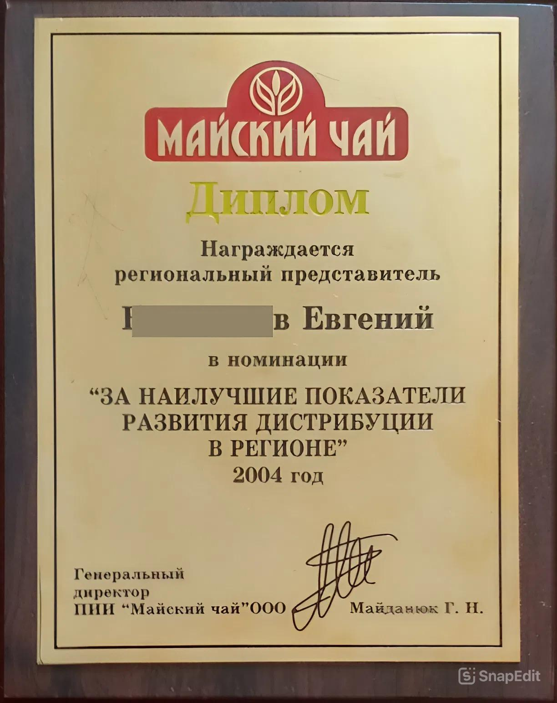

Должность регионального представителя компании FMCG, и не только: как не ошибиться в подборе кандидата
Содержание статьи:
Не дайте регионалу уснуть!
— Алё, гара-аж! Подъ-ём!
И это не про фильм Волга-Волга, и не про утро в казарме. Это корпоративное обучение региональных представителей: бизнес-тренер будит одного из них. Заснул бедолага.
И проблема не в скучном тренинге, а в том, что в компанию попал случайный человек, да к тому же на должность регионального представителя.
«Вы что, не видели кого брали?» Такой вопрос прилетит от топ-менеджера к HR-специалисту и региональному руководителю. Они же отвечают за подбор сотрудников в других городах.
Говорят, на ошибках учатся. Эта статья о том как не ошибиться в подборе регионального представителя.
Кто есть кто: Компания прямой производитель & дистрибьютор
Для ясности лучше разобраться в некоторых понятиях. Компания прямой производитель создаёт товары под разными торговыми марками (сокр.ТМ). Если они известны потребителям, то называются брендами.
Дистрибьютор (от англ. распределитель) — это посредник. Нередко — в статусе ИП или предприятия. Закупает товары у производителя и распределяет их оптовым и розничным продавцам. Заключает с производителем соглашение о сотрудничестве. И обязуется распространять продукцию по каналам сбыта в своём городе или области: опт, розница, рынки. Продажи ведёт силами собственной торговой команды. Чаще всего она состоит из людей, которых называют торговыми представителями.
Региональный представитель действует как эмиссар торговой марки и реализует стратегию компании в регионе. Работает совместно с дистрибьютором в одних территориальных границах.
Далее я расскажу о том:
Какие бывают последствия непрофессионального подхода к подбору регионального представителя.
Какие шаги предшествуют поиску регионала.
Как подбирать эффективного регионала.
Знания, помноженные на опыт — золото!
Прежде чем идти дальше, всё-таки уместно спросить: а кто здесь автор? Компетентен ли в вопросах большого бизнеса?
Хорошо, если работал региональным представителем в крупных компаниях. При этом прошёл массу тренингов в ведущих агентствах. А ещё лучше, когда он не только знает, но и умеет. Что «на сегодня» считается редкостью.
Это я о себе: не очень скромно, но объективно.
Итак, меня зовут Евгений. Более 10 лет работал в крупных компаниях: «Май»(Майский чай), «Eskaro»(лакокрасочная продукция), «Донецкий мясокомбинат».
 |
|---|
| Одна из моих наград |
Был на разных должностях. Из них региональный представитель, а также директор: по продажам, филиала, дистрибьюторской компании.
Примеры, которые увидите в статье — непридуманные истории. Говорить буду о том, что видел, а иногда и сам пережил.
Я поделюсь с вами тем, что почерпнул когда-то на тренингах. А потом применил на практике. По теме развития торговых марок на территории получите экспертные знания, помноженные на опыт. А значит, повысите компетентность в тонкостях работы регионального представителя.
Последствия непрофессионального подхода к подбору регионального представителя
Деньги в рекламу – «как вода в сухую землю»
Производитель тратится на рекламу, в освоение приоритетных каналов сбыта, в том числе и по регионам. Это в контексте стратегии. По городам она реализуется с помощью регионального представителя. А если он – «ни рыба ни мясо»? Зачастую, так и есть.
Сотрудничество с первыми лицами и торговыми представителями дистрибьютора — выглядит тускло. Работа с vip-розницей, оптовиками, рыночниками — может вовсе отсутствовать. Ну что ж, вот такой он — вялый удалённый работник.
| Бывает и так: продукт рекламируется, а в рознице его нет. Или есть, но где-то на нижних полках. Покупатель готов к покупке, а товара нет. Получается, деньги в рекламу — «как вода в сухую землю». Если бренд отсутствует на витринах, значит, дистрибьютор и регионал работают на «двойку». |
|---|
А ведь на собеседовании, когда-то будущий регионал щеголял в костюмчике, живенький, общительный. Блистательно тесты прошёл. Подавал большие надежды. На вопросы эйчаров и регионального менеджера отвечал внятно.
Но пришли рабочие будни. Освоившись, увидел пару косяков дистрибьютора и бегом к нему, прям к первому лицу. Это собственник — как часто бывает долларовый миллионер. Сидит за столом, в спортивном костюме, уткнувшись в гаджет — до жалоб регионала ему вообще дела нет.
На каком-то моменте бизнесмен поднимет голову, и, глядя расфокусированным взглядом в сторону собеседника, произнесёт: «Ты это сам придумал, или тебе кто-то подсказал? Что ты нам тут рассказываешь. Мы делаем что можем, твоё руководство в курсе».
Облом в самом начале — хозяин дистрибьютора показал не очень дружественное отношение к марке.
Регионал должен принять это как вызов. Его цель — взять инициативу, усилив переговорные позиции. Вплоть до поиска нового дистрибьютора, и обязательно под контролем руководства.
Далее, визит к тому же собственнику, только теперь с ультиматумом, а не с жалобами. Прозвучит как-то так: «Если ты не сделаешь то-то и то-то, сам понимаешь, незаменимых дистрибьюторов не бывает».
Это укороченная версия, но достаточно распространённая. В нашем случае регионал ещё не окреп. Но акулы бизнеса слабину не прощают, нагло манипулируя переговорщиком.
А ведь этого могло и не быть, если бы до открытия вакансии, эйчар и региональный менеджер проанализировали ситуацию в регионе. Перед ними должна лежать детализированная карта по всем показателям. Тогда можно понять, куда и как должна двигаться компания на территории.
В итоге они чётко понимали бы, какой человек должен разруливать ситуацию. Ведь представитель в регионах — это опора компании. По форме он мог быть и в костюмчике с лоском, а по содержанию — креме́нь по всем статьям.
Для бизнес-анализа нужны знания. Любой хедхантер может получить их по-разному: на тренингах в группе или самостоятельно найти обучающий материал. К примеру — этот курс [ССЫЛКА] «Торговая марка: управление каналами сбыта на территории». |
|---|
Главное, окунуться в тематику: что такое торговая марка, каналы сбыта, дистрибьюция, розничная сеть, и как это всё должно работать на территории.
Региональный представитель бизнеса компании — он же Brand Ambassador
Или, представим, что в прайсе дистрибьютора есть 50 наименований производителя. Но торговые представители постоянно продают всего 2–3 самых ходовых. Остальные не продают, потому что о них ничего не знают.
Просто торговой команде дистрибьютора никто не дал знаний о товаре.
| Регионал — он же Brand Ambassador и блестяще знает свой продукт |
|---|
Регионал задуман не только как успешный продавец, а ещё и Brand Ambassador (анг. посол, посланник бренда). Это человек, который блестяще знает свой продукт. Кто, как ни он умеет рекламировать «вкусняшки» своей компании, и сможет научить этому других. Для этого он проводит тренинги по специфике продукта.
В результате торговые представители становятся экспертами. Знают свойства, преимущества и выгоды товара, и охотно применяют их в работе. Если добавить мотивации торговой команде, региональные продажи вырастут на глазах.
Об отношениях с дистрибьюторами: «кто им платит, тот и заказывает музыку»
Некоторые компании работают в регионе с эксклюзивным дистрибьютором, который лоялен к одному (ТМ 1), и неприметно враждебен к другому поставщику (ТМ 2).
В результате руками дистрибьютора сковывается развитие торговой марки (ТМ 2) на территории. Причина в цене вопроса: кто заплатит тот и заказывает музыку (ТМ 1). Дистрибьютор, конечно не признаётся в таком вредительстве. Это естественно для него.
Роль регионала выявлять проблемы и расставлять по ним приоритеты. Затем предлагать руководству решение. Но это под силу только компетентному работнику.
Если он профан, то ему и в голову не придёт о возникшей трудности с дистрибьютором. В бестолковом порыве займёт себя второстепенными задачами.
Но самое печальное то, что руководство компании тоже не в курсе. Издалека ведь трудно разобраться. Тем временем дистрибьютор продолжает методично водить вокруг пальца торговую марку, а вместе с ней и горе-амбассадора.
Описанные ситуации сплошь и рядом. Как же так получается? Откуда берутся такие работники? Об этом далее.
Поиск регионала — предварительные шаги
Поиск в городах — чаще всего компетенция региональных менеджеров и эйчаров. Под большинство вакансий заготовлены лекала с некоторыми корректурами. Но, региональный представитель — должность специфическая.
| Важно! В городах компании развиваются по-разному. Например, где-то срочно нужен кризис-менеджер (1), а вы взяли системного управленца (2). Но, для первого (1) экстрим — это жизнь, второму (2) — погибель. |
|---|
Поэтому подбирать регионалов по одному шаблону — заведомо проигрышная тактика.
Это как если бы гидрометцентр давал прогноз погоды в среднем по стране. Потом кто то в Мурманске, невзирая на оконный градусник, выйдет на улицу в ветровке. А на дворе февраль..
Вот несколько типичных примеров.
Казак на лихом коне
Представьте, компания выпустила новинку — торговую марку в эконом сегменте. Амбиции первых лиц далеко не местечковые, а с размахом: покорять регионы.
Для недорогого товара целевая аудитория — это люди с низкими доходами. Поэтому товар должен быть доступен по деньгам и его везде можно купить.
Поэтому важно, с максимальным охватом войти в приоритетную розницу. Туда, где обитает целевой потребитель. В первую очередь в рынки, небольшие и средние магазины. Их легче привлечь, чем супермаркеты.
Впрочем, работа регионального представителя незамысловатая. Ему не придётся вести сложных переговоров с ЛПРами дистрибьютора и c зубастыми байерами vip-сетей. Не нужно будет бороться за полочное пространство в магазинах. Ведь на витрины ещё нужно попасть.
Его миссия — покорять розницу. Самостоятельно, либо на пару с торговым представителем дистрибьютора, в торговые точки нужно поставить 2-3 наименования. Это главное, что от него требуется.
| Казак на лихом коне |
|---|
С таким анализом вырисовывается образ будущего сотрудника. А затем и профиль должности для регионала.
Смелый, общительный, открытый — эдакий казак на лихом коне: вот такой нужен представитель! Необязательно с высоким IQ, но с дерзновением стать профессионалом в продажах.
Регионал как менеджер по работе с vip клиентами
А вот другая картина, но с очевидным контрастом. Есть производитель, но уже премиального товара.
Покупатели не простые — зарабатывают выше среднего и долго не меняют полюбившейся марки(ТМ). Им важно постоянно подогревать свой высокий статус. Для этого товар должен быть имиджевым и с безупречным качеством.
Отсюда вытекают региональные задачи:
Вход в элитные точки продаж.
Доминирование на витринах.
Постоянное присутствие ассортимента в целевой рознице.
Максимальное выделение торговой марки среди конкурентов.
Контроль ценового демпинга.
Вот ещё вводные. В далёком городе этот производитель работает с двумя не очень управляемыми дистрибьюторами. В итоге развитие торговой марки пущено на самотёк.
В этой ситуации регионалу будет непросто. Как искусному воину придётся ввязаться в борьбу за интересы компании. Словно ловкий дипломат, он мягко, но настойчиво будет добиваться от дистрибьюторов лучших показателей. В vip сетях начнёт выбивать выгодные условия.
| Регионал как vip менеджер |
|---|
Такое под силу только интеллектуалу и аналитику, продавцу и сильному переговорщику в одном лице. Поэтому казак на лихом коне уже не справится. Не по Сеньке шапка.
Как ни странно, казаков берут туда, где нужен vip менеджер, и наоборот. Абсурдно, но это факт, который, к сожалению, я не могу подтвердить с указанием конкретных компаний. С моей стороны это было бы некорректно.
Вишенка на тортик — идеальный профиль должности
Я описал всего лишь два типичных случая. Они резко отличаются, но есть кое-что общее. Сначала я последовательно собрал аналитику:
Выяснил всё о продукте, целевой аудитории, конкурентах.
Расставил приоритеты по каналам сбыта.
Выделил нужные акценты по дистрибьюции.
Далее, имея на руках все слагаемые мониторинга я отчётливо представлял, куда и как должны двигаться регионалы. Стало быть мне стали понятны их личные и профессиональные качества.
Так и родились образы «казака на лихом коне» и «vip менеджера». Эйчарам профи такое тоже по плечу!
Осталась самая малость — для «казака» и «vip менеджера» оформить профили должности. Они и есть ключи к поиску эффективных регионалов! Это довольно полезные документы:
Позволяют понять каких претендентов нужно отсечь ещё до этапа собеседования.
Подробно описывают вакантное место с обязанностями регионального представителя.
Систематизируют требования к кандидату.
Помогают обоснованно прогнозировать результаты его работы.
Качественные профили должности готовы. Дальше «дело техники», с применением классического рекрутинга. Важно прописать функционал для каждого регионала с учётом контроля результатов.
Резюмируем
Искали Ваню, а нашли Федю
Подводя итог, хочется подчеркнуть особую ценность аудита компании. Чем он подробнее и точнее, тем впоследствии облик кандидата будет более ясным.
Если вы хорошо разбираетесь в бизнесе компании, то выше вероятность успешно закрыть региональную вакансию. Значит, у вас больше шансов подобрать подходящего человека на должность регионального представителя.
В противном случае рекрутинг со всеми наворотами превращается в лотерею. Образно говоря: искали Ваню, а нашли Федю.
| Искали Ваню, а нашли Федю |
|---|
В этой статье на примерах из практики я показал важность ориентироваться в бизнесе компании в целом и применительно к удалённой территории. Но без специальных знаний не обойтись.
Торговая марка, ценовое позиционирование, целевая аудитория, каналы сбыта, дистрибьюция. В реальности этот список ещё длиннее, и в нём придётся разбираться. Даже если вы «до мозга костей» кадровик.
Экспертность в теме «продукт→дистрибьюция→регионы» — это и ваш неотъемлемый инструмент, без которого никак, и в заключение немного о нём.
Построение каналов сбыта: помощь эйчарам, и не только
Осталось всего лишь найти компетентный источник информации. Ведь распутывать клубки сложных бизнес процессов — то ещё занятие!
В помощь предлагаю вам уникальный и недорогой курс всего за 1,5 тыс. рублей:
[ССЫЛКА]«Торговая марка: управление каналами сбыта на территории».
По сути, перед вами материалы двухдневного тренинга, но в лаконичном изложении — только самое нужное. Это уникальное собрание лучших знаний от ведущих тренинговых агентств. Причем теория дополняется примерами из моего опыта, что существенно облегчает усвоение материала.